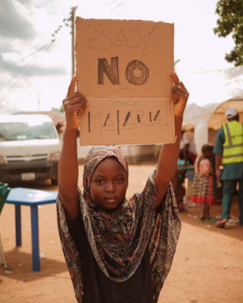
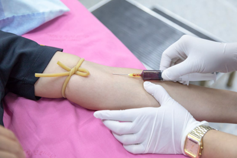
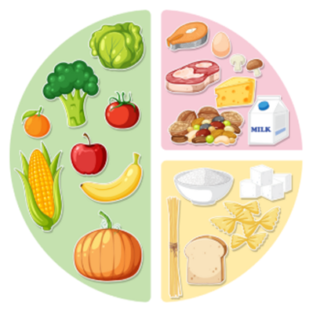

ستاسو د روغتیا سرچینې ته ښه راغلاست
دا وېبپاڼه د کلارکسټون، جورجیا د کډوالو ټولنو لپاره ځانګړې روغتیايي معلومات برابروي. موږ پر عامو ناروغیو، د ذهني روغتیا ملاتړ، د تغذیې لارښوونې، او د روغتیايي پاملرنې ته د لاسرسي سرچینو تمرکز کوو.
چټک لاسرسی:
په کډوالو ټولنو کې عامې ناروغۍ
په هره ناروغۍ کلیک وکړئ څو د نښو، درملنې او مخنیوي په اړه معلومات ترلاسه کړئ.
عام زکام
ويروسي انتانڅه شی دی: د پورتني تنفسي جهاز ويروسي انتان دی چې له ۲۰۰ څخه د زیاتو ویروسونو له امله رامنځته کېږي او د ټوخي یا پرنجۍ په څاڅکو خپرېږي. معمولاً ۷-۱۰ ورځې دوام کوي.
نښې:
- د پوزې بهېدل یا بندېدل
- د ستوني درد
- ټوخی
- پرنجی
- سر درد
- کمې درجې تبه
انفلونزا
ويروسي انتانڅه شی دی: ساري تنفسي ناروغي ده چې پوزه، ستونی او سږي اغېزمنوي. د ویروس ډولونه هر کال بدلېږي، نو هر کال خپرېږي، په ځانګړي ډول په ګڼ ګوڼو ځایونو کې.
نښې:
- ناڅاپي تبه
- ټوخی
- د ستوني درد
- د بدن دردونه
- ستړیا
- سر درد
- اشتها کمېدل
هيپاټایټس (د ځيګر التهاب)
ويروسي د ځيګر انتان
څه شی دی: د ځيګر التهاب دی چې ویروسونه یې لامل کېږي. پنځه ډولونه لري: A (کړککړ خواړه/اوبه)، B (ککړ بدني مایعات)، C (ککړ وینه)، D (یوازې له B سره)، او E (کړککړې اوبه).
نښې:
- یرقان (د پوستکي یا سترګو ژېړوالی)
- ستړیا
- متلی
- کانګې
- د خېټې درد
- د ځيګر زیان یا سیروز
- د ځيګر سرطان (په شدیدو مواردو کې)
ملاريا
پرازېتي ناروغي
څه شی دی: د مچانو له لارې خپرېدونکې ناروغي ده. په استوايي سیمو کې ډېره ده او پرته له درملنې د ژوند لپاره خطر لري.
نښې:
- تبه
- لړزه
- خولې
- سر درد
- د عضلو درد
- ستړیا
- متلی او کانګې
پولیو وایرس
ويروسي انتان
څه شی دی: ډېر ساري وایرس دی چې د خولې له لارې بدن ته ننوځي او په ستوني کې زیاتېږي. د ککړو خلکو او سطحو له لارې خپرېږي. ډېر کسان نښې نه لري، خو شاوخوا ۵٪ د Abortive Polio سره مخ کېږي.
د غیر فلج پولیو نښې:
- د عضلو کمزوري
- بدلونونه/کږوالی
- د خوځښت له لاسه ورکول
- تبه
- د ستوني درد
- متلی یا کانګې
سټریپ ستونی
باکتریايي انتانڅه شی دی: د Group A Streptococcus له امله عام باکتریايي انتان دی. د ټوخي، پرنجۍ یا ککړو سطحو له لارې خپرېږي. په ماشومانو کې عام دی خو هر څوک یې اخته کېدای شي.
نښې:
- تبه
- د ستوني درد
- سر درد
- د معدې درد
- د تېرولو پر وخت درد
- اشتها کمېدل
د ذهني روغتیا ملاتړ
د صدمې وروسته فشار اختلال
څه شی دی: د جګړې، تاوتریخوالي یا شکنجې په شان صدمو وروسته راځي. خوب، احساسات او حافظه اغېزمنوي او عصبي سیستم په تلني خبرداري کې ساتي.
نښې:
- بدې خوبونه یا ناڅاپي یادونه
- د خوب ستونزې
- خپګان یا خپه کېدل
- د ورځنیو کارونو لیوالتیا له لاسه ورکول
- تل تنګ او محتاط پاتې کېدل
- ټولنیز ملاتړ او د باور وړ اړیکې
- ژور د ساه اخیستلو تمرینونه
- قدم وهل، کشش، یوګا، یا بهر وخت تېرول
- ثابت ورځنی مهالوېش
- په ژورنال کې لیکل یا له باور لرونکي کس سره خبرې
د ذهني روغتیا ناروغۍ
څه دي: ذهني روغتیا د فکر او احساساتو توازن دی. اضطراب، خپګان او PTSD په هغو کسانو کې ډېر وي چې صدمه، بې ثباتي یا کمې سرچینې لري.
څنګه پوه شئ چې ستونزه لرئ:
- د اضطراب له امله د خوب ستونزې
- تل ځان ستړی یا تر فشار لاندې احساسول
- یواځیتوب احساسول
- تمرکز نه کېدل
- ډېر یا لږ خوب
- له خوښې کارونو څخه دلچسپي له لاسه ورکول
- پرله پسې ګناه یا خپګان
د مرستې لارې
- له باور لرونکي کس یا ملاتړ ډلې سره خبرې
- د ساه تمرینونه، رسمول یا په ژورنال کې لیکل، او بهر وخت تېرول
- ټولنیز اړیکي ساتل او وړې خبرې
- له معالج یا ذهني روغتیا متخصص سره خبرې
په کلارکستن کې وړیا د ذهني روغتیا سرچینې
- د کډوالو د ذهني روغتیا پروګرام وړیا مشوره شته
- ټولنیزې ملاتړ ډلې اونیزې ناستې
- د بحران تلیفوني کرښه (۲۴/۷) 988 - وړیا او محرم
تغذیه او بدني روغتیا
کمخوړنه (سوء تغذیه)

څه شی دی: کله چې بدن اړین غذایي مواد یا کالورۍ ونه لري. د ناروغۍ، د خوړو کمښت، یا د جذب ستونزې له امله رامنځته کېږي. کوچني ماشومان او حامله ښځې ډېرې اغېزمنې دي.
- وزن کمېدل
- ستړیا
- کمزوري
- د ویښتانو تویېدل
- سر ګرځېدل
د بدني روغتیا ستونزې
څه شی دی: بدني روغتیا د تغذیې، فټنس او د ناروغۍ مخنیوي حالت دی.
ولې بدني روغتیا مهمه ده:
- مزاج او انرژي ښه کوي
- بدن د فشار پر وخت قوي ساتي
- د ناروغیو او انتاناتو خطر کموي
- د فشار هورمونونه کموي او ذهني روغتیا ښه کوي
- د ودې او پرمختګ سره مرسته کوي
د بدني روغتیا ښه کولو لارې:
- هره ورځ قدم وهل زړه او عضلې پیاوړې کوي له خوړو وروسته لنډ مزل وکړئ
- کشش، چمبې یا فشار تمرینونه وزن تنظیموي له ۵-۱۰ دقیقو پیل وکړئ
- ساده، سالم او متوازن خواړه وخورئ سالم پلیټ د لارښود په توګه وکاروئ
- کور پاک وساتئ او تازه هوا داخل کړئ کله چې ممکن وي کړکۍ پرانیزئ
- کلني واکسینونه او معاینات ترسره کړئ ټیټ لګښت کلینیکونه وګورئ
- هره شپه لږ تر لږه اته ساعته خوب استراحت د روغېدو او تمرکز لپاره مهم دی
واکسینونه
د 18 کلونو یا کم عمره ماشومانو او تنکیو ځوانانو لپاره د واکسین وړاندیز شوی مهالویش، امریکا 2026
جدول 1: د عمر له مخې منظم واکسینونه (له زیږون تر 18 کلونو).
فایل: د 18 کلونو او کم عمره ماشومانو واکسین مهالویش - امریکا 2026 (PDF)
د طبي نښو له مخې د ماشومانو او تنکیو ځوانانو واکسین وړاندیز شوی مهالویش، امریکا 2026
جدول 3: د طبي حالاتو او خطر فکتورونو له مخې سپارښتل شوي واکسینونه.
د ناوخته پیل کوونکو ماشومانو او تنکیو ځوانانو لپاره د تکمیلي واکسین مهالویش، امریکا 2026
جدول 2: د هغو ماشومانو او تنکیو ځوانانو لپاره د جبران مهالویش چې ناوخته پیل کړي یا له یوې میاشتې ډېر شاته وي.
د ماشومانو او تنکیو ځوانانو د واکسین مهالویش کې واکسینونه او نور معافیتي مواد
د واکسینونو د لنډیزونو او تجارتي نومونو مفصل لست؛ د لا ځانګړو معلوماتو لپاره.
وړیا او ټیټ لګښت کلینیکونه
موزايک روغتيايي مرکز
موخه: بې بیمې کسانو ته په ټیټه بیه روغتیايي خدمتونه وړاندې کوي. کارکوونکي ۱۳ ژبې خبرې کوي.
تلیفون: (678) 383-1383
برېښنالیک: info@mosaichealthcenter.com
پته: 3700 Market Street, Building B, Clarkston, GA 30021
خدمتونه: لومړنۍ پاملرنه، د ښځو روغتیا، ذهني روغتیا، سترګې، پوستکي، الټراساؤنډ، زړه، او ارزانه تخصصي راجع کول
وېبپاڼه: mosaichealthcenter.com
د ډاکټرانو د پاملرنې کلينيک
موخه: ټیټ عاید او بې بیمې خلکو ته د غیر بیړني روغتیايي خدمتونو وړاندې کول.
تلیفون: (404) 501-7940
پته: 440 Winn Way, Decatur, GA 30033
خدمتونه: لومړنۍ طبي پاملرنه، متخصص ته راجع کول، د درملو اسانتیا، سکرینینګونه او تشخیصي ازموینې
وېبپاڼه: physicianscareclinic.org
د مثبت اغېز روغتيايي خدمتونه
موخه: د HIV ټولنې لپاره جامع او لاسرسي وړ خدمات.
تلیفونونه: Decatur (404) 589-9040، Duluth (770) 962-8396، Marietta (770) 514-2464، Clayton (678) 210-9750
پتې: Decatur Center: 523 Church Street, Decatur, GA 30030. Duluth Center: 3350 Breckinridge Blvd, Suite 200, Duluth, GA 30096. Marietta Center: 1650 County Services Parkway, Suite 200, Marietta, GA 30008. Clayton Center: 1117 Battle Creek Rd, Jonesboro, GA 30236
خدمتونه: د HIV طبي پاملرنه، درملتون، وړیا HIV او STI سکرینینګ، ذهني مشوره، د نشې درملنه، تغذیوي مشوره
وېبپاڼه: positiveimpacthealthcenters.org
د ترانسپورت مرسته
د طبي ملاقاتونو لپاره وړیا MARTA کارډونه شته
د ايثار سازمان سره اړیکه: (470) 235-2383
هغوی کولی شي طبي ملاقاتونو ته د تګ راتګ مرسته وکړي
په اټلانټا کې د خوړو بانکونه:
مرکزي سیمه:
Atlanta Justice Alliance: زیاتره شنبې 12 بجې په Woodruff Park کې. انستاگرام: @atlantajusticealliance، پته: 10 Park Place NE, Atlanta, GA 30303
Food Not Bombs: د میاشتې لومړۍ جمعه 7 بجې د For Keeps Books مخې ته؛ دویمه او څلورمه جمعه 7-9 بجې د MLK Jr Dr SW او Morehouse په څلورلارې کې. انستاگرام: @atlfoodnotbombs
سویلي برخه:
ATL Liberation Distro: هره چهارشنبه له 1 تر 4 بجو په Greenbriar Rec Center کې. انستاگرام: @southsideatl
Free99 Fridge: هره ورځ د خوړو المارۍ په دغو پتو کې: 2022 Oakland Drive, Atlanta 30315؛ 879 Dill Ave SW Atlanta 30310؛ 3124 Metropolitan Pkwy, Atlanta 30311
East End Community Dinner: هره سه شنبه 5 بجې په Lifelong Wellness کې. انستاگرام: @east_end_commons_atl
ختیځه برخه:
Tabernacle of Praise Food Distribution: هره درېیمه پنجشنبه له 11 تر 2 بجو @ 3020 Maynard Holbrook Jr Dr NW. شمېره: 4046969606
Rehoboth Food Pantry: هره سه شنبه له 10:30 څخه تر 1 بجې په 2997 Lawrenceville Hwy. شمېره: 6787202510
Intown Cares: د خوړو پینټري له دوشنبې تر جمعې 9:30-12:30 @ 1026 Ponce de Leon Ave NE, Atlanta. شمېره: 4048811991
لویدیځه برخه:
Free99 Fridge: د اټلانټا په بېلابېلو سیمو کې، هره جمعه 11-4 بجې په 3728 Wendell Dr SW. انستاگرام: @free99fridge
Goodr Grocery PopUps: د اونیزو پروګرامونو لپاره انستاگرام تعقیب کړئ. انستاگرام: @goodrco
Westside Food Fair: هره یکشنبه 1-3 بجې په 970 Jefferson St NW. انستاگرام: @happy_tuesday
Fountain of Hope: د سه شنبې او پنجشنبې ورځو 10-12 بجې @ 1138 Bolton Rd. شمېره: 4049847990
د بک هیډ سیمه:
Grain of Rice: هره یکشنبه سهار د Lindbergh سره نږدې وړیا ګرم خواړه. د معلوماتو لپاره @consult.slfa ته پیغام واستوئ
له ښار د باندې:
Stone Mountain: شاورونه، خیمې، او د خوړو پینټري - Maranatha SDA Church @ 2730 Dresden Dr. شمېره: 4042841409
نور د خوړو پینټریانې: وګورئ www.foodpantries.org/ci/ga-atlanta
نور یادښتونه:
ډېری معلومات هره اوونۍ تازه کېږي
د تلیفون شمېرې بدلېدای شي
د دې کار ډېره برخه د ټولنې د تنظیموونکو له خوا ترسره کېږي
دا لست په بې نومه ډول جوړ شوی. که ستاسو د سیمې ټولنیز ډیسټرو وي، دې برېښنالیک ته ولیکئ: fonb.atl313@protonmail.com
که غواړئ ستاسو د سیمې ډیسټرو په دې لست کې اضافه شي یا مرسته وکړئ، @xvansesatlanta_ ته پیغام ورکړئ
د وېبپاڼې د نظرپوښتنې سروې
موږ سره مرسته وکړئ چې دا وېبپاڼه د کډوالو ټولنې د ښه خدمت لپاره ښه کړو
بیړنۍ مرسته
که تاسو یا بل څوک سملاسي طبي مرستې ته اړتیا لري:
۹۱۱ ته زنګ ووهئ
د ژوند ګواښوونکو بیړنیو حالاتو لپاره
له هر ټیلیفون څخه وړیا زنګ
د زهرو کنټرول
1-800-222-1222
په ۲۴/۷ توګه وړیا مرسته په ډېرو ژبو
د کړکېچ کرښه
۹۸۸ ته زنګ ووهئ
د ذهني روغتیا د کړکېچ ملاتړ
کله بیړني خونې ته ولاړ شئ:
- د سینې درد یا فشار
- ساه اخیستل ستونزمن
- سخته وینه بهېدنه
- ناڅاپي کمزوري یا بېحسي
- سخت سوځېدنه
- مات هډوکی
- د دوا ډېر استعمال یا زهري کېدل
- د ځان یا نورو د زیان فکرونه
کلارکسټون ته نږدې روغتون:
ايموري ډيکېټر روغتون (Emory Decatur Hospital)
2701 N Decatur Road, Decatur, GA 30033
بیړنۍ څانګه: (404) 501-1000